O Simple Hair Cards transforma o processo de criar mechas, tranças, mapas e materiais num fluxo integrado dentro do Blender — do primeiro fio até a malha pronta pra exportação.
The Simple Hair Cards turns the process of creating strands, braids, maps and materials into a single integrated workflow inside Blender — from the first strand to a mesh ready for export.
Editar → Preferências → Add-ons → Instalar..., selecione o .zip e ative a caixinha.
Edit → Preferences → Add-ons → Install..., select the .zip and enable the checkbox.
Abra a barra lateral da viewport (N) e encontre a aba SHC.
Open the viewport's sidebar (N) and find the SHC tab.
Aba Criar → Criar (Clique) → clique na superfície do seu modelo. Pronto, sua primeira mecha existe.
Create tab → Create (Click) → click on your model's surface. Done, your first strand exists.
As abas do addon
The addon's tabs
O que cada seção do painel faz.
What each section of the panel does.
Onde a mecha nasce — três jeitos diferentes de criar, explicados logo abaixo.
Where the strand is born — three different ways to create, explained below.
Resolução da curva, pontos de controle e o perfil do fio (Redondo, Fita, Cruzado, Trança/Corda, Personalizado).
Curve resolution, control points, and the strand's profile (Round, Ribbon, Crossed, Braid/Rope, Custom).
Os pincéis: Criar (Clique), Pentear, Mover, Ímãs, Divisor (Risca), Laço (Amarrar Corpo), Excluir Cabelo, Crescer / Encurtar, Tesoura.
The brushes: Create (Click), Comb, Move, Magnets, Divider (Part), Tie (Bundle Strands), Delete Hair, Grow / Shorten, Scissors.
Cena separada, com câmera e luz próprias, pra gerar mapas de textura a partir de uma mecha de referência.
A separate scene, with its own camera and light, to generate texture maps from a reference strand.
Monta o material final a partir dos mapas gerados — inclui o Montar Material, explicado mais abaixo.
Builds the final material from the generated maps — includes Build Material, explained further below.
Converte as mechas em malha leve, pronta pra exportar pra game engine.
Converts strands into a lightweight mesh, ready to export to a game engine.
Organiza várias texturas de cabelo num atlas único, com um editor visual de células.
Organizes several hair textures into a single atlas, with a visual cell editor.
Conheça os Painéis
Exploring the Panels
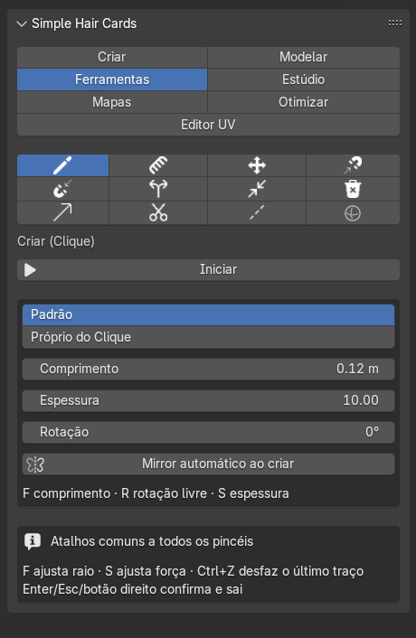
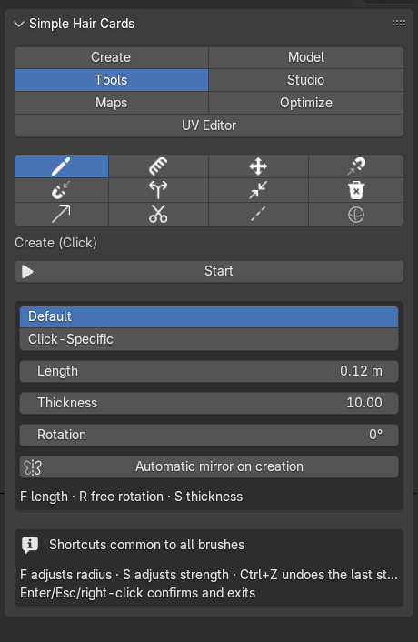
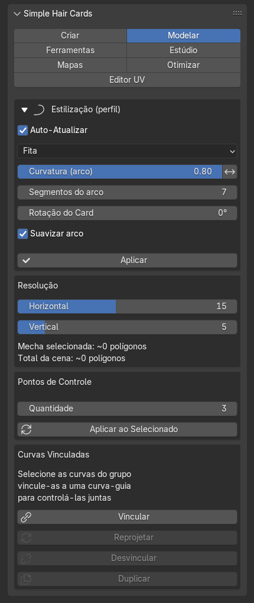
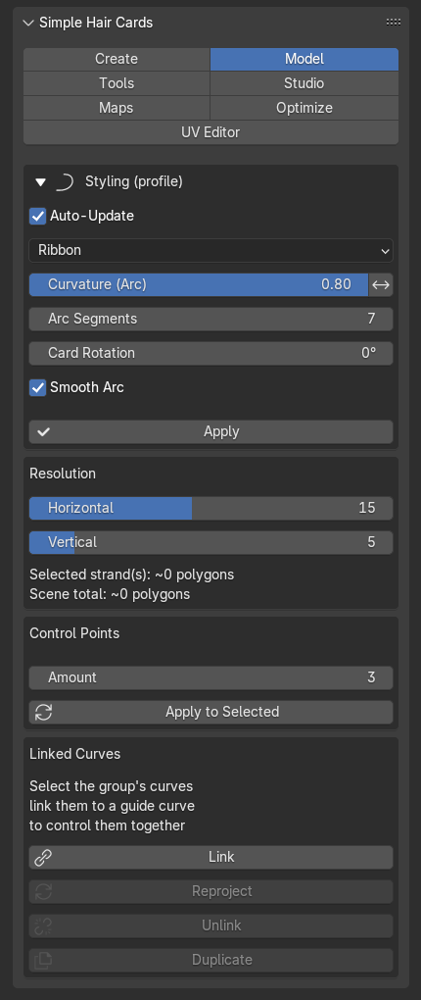
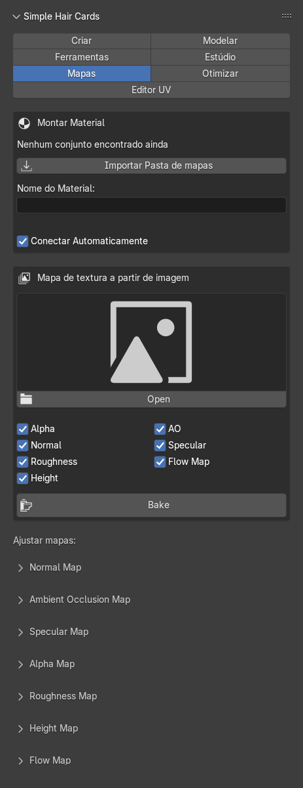
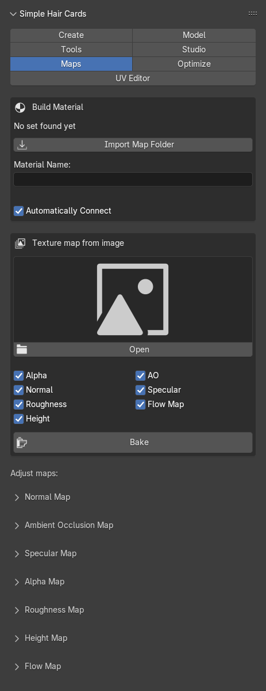
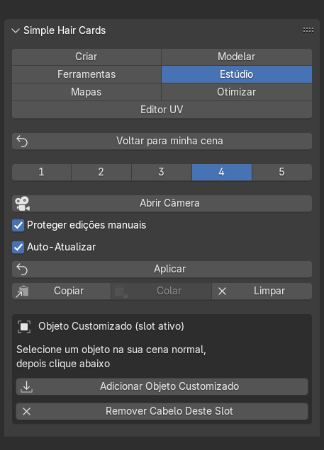
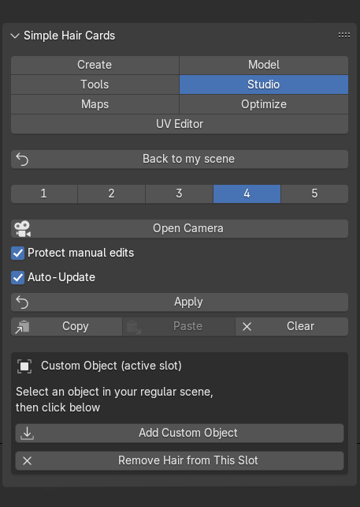
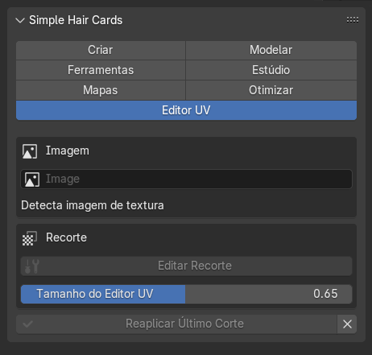
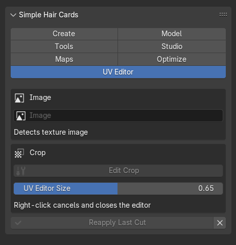
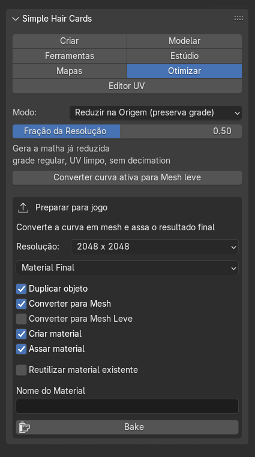
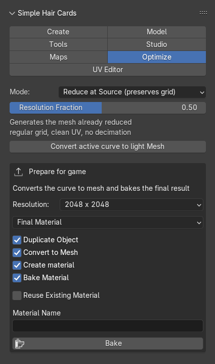
Perfis em ação
Profiles in action
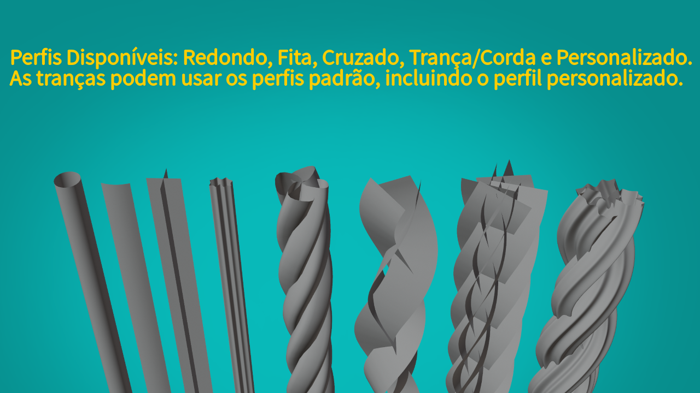
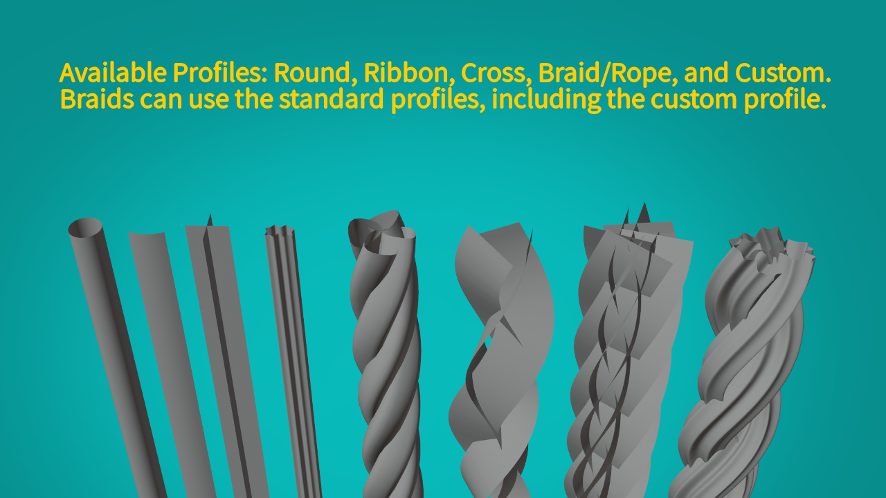
Criar: três jeitos de nascer cabelo
Create: three ways to grow hair
A aba Criar não é uma ferramenta só — são três abordagens diferentes pra chegar no mesmo lugar. Use a que fizer mais sentido pro seu fluxo:
The Create tab isn't a single tool — it's three different approaches to reach the same result. Use whichever fits your workflow best:
- Pincéis (aba Ferramentas) — o jeito principal e mais usado: pinta mechas diretamente na superfície com os pincéis descritos abaixo.
- Brushes (Tools tab) — the main, most-used way: paint strands directly on the surface with the brushes described below.
- Vertex Group — cria as mechas a partir de um grupo de vértices já pintado no seu modelo (Weight Paint), útil quando você já tem uma área bem definida por peso.
- Vertex Group — creates strands from a vertex group already painted on your model (Weight Paint), useful when you already have a well-defined area by weight.
- Fita de Cabelo (Ribbon) — desenha o cabelo como fitas/linhas editadas manualmente, no modo Editor Preciso. Clique em Iniciar pra desenhar linhas novas; depois de mudar algum ajuste (como Mechas na Fita), clique em Editar de novo pra reabrir as linhas já desenhadas e ver a mudança refletida. É experimental — funciona, mas ainda está em desenvolvimento e pode mudar em versões futuras.
- Hair Ribbon — draws hair as manually edited ribbons/lines, in Precise Editor mode. Click Start to draw new lines; after changing a setting (like Strands in Ribbon), click Edit again to reopen the lines you've already drawn and see the change reflected. It's experimental — it works, but it's still under development and may change in future versions.
Os pincéis, em resumo
The brushes, in short
- Criar (Clique) — clique e arraste pra desenhar uma mecha nova direto na superfície.
- Create (Click) — click and drag to draw a new strand directly on the surface.
- Pentear — puxa/dobra mechas existentes, como um pente de verdade.
- Comb — pulls/bends existing strands, like a real comb.
- Ímã de Raiz / Ímã de Ponta — atrai a raiz ou a ponta de mechas próximas pro ponto clicado.
- Root Magnet / Tip Magnet — attracts the root or the tip of nearby strands toward the clicked point.
- Divisor (Risca) — separa uma mecha em duas.
- Divider (Part) — splits a strand into two.
- Laço (Amarrar Corpo) — amarra várias mechas juntas, como uma tiara ou elástico.
- Tie (Bundle Strands) — ties several strands together, like a headband or a hair tie.
- Excluir Cabelo — remove mechas com um clique/arraste.
- Delete Hair — removes strands with a click/drag.
- Crescer / Encurtar — alonga (ou encurta) mechas já existentes, esticando a ponta na direção atual delas.
- Grow / Shorten — lengthens (or shortens) existing strands, stretching the tip in its current direction.
- Tesoura — corta mechas numa linha reta desenhada na tela.
- Scissors — cuts strands along a straight line drawn on screen.
- Mover — reposiciona uma mecha inteira sem alterar sua forma.
- Move — repositions an entire strand without changing its shape.
- Linha Guia — marca/desmarca a mecha selecionada como Guia (fica destacada em ciano no viewport); outras mechas próximas podem herdar direção, altura e/ou rotação dela ao clicar em "Aplicar Influência da(s) Guia(s)".
- Guide Line — marks/unmarks the selected strand as a Guide (it gets highlighted in cyan in the viewport); other nearby strands can inherit its direction, height and/or rotation when you click "Apply Guide(s) Influence".
- Influência de Forma Guia — adiciona uma esfera na cena que atrai o cabelo ao redor dela.
- Guide Shape Influence — adds a sphere to the scene that attracts hair around it.
O "inverso" de cada pincel
Each brush's "invert"
Seis pincéis têm um comportamento oposto ao padrão, guardado numa caixinha própria no painel — e você pode ativar esse oposto na hora, sem precisar marcar a caixinha, só segurando Ctrl enquanto pinta (soltar o Ctrl volta ao normal).
Six brushes have an opposite behavior to their default, stored in their own checkbox on the panel — and you can turn that opposite on on the spot, without needing to check the box, just by holding Ctrl while painting (releasing Ctrl goes back to normal).
| Pincel | Padrão | Inverso (checkbox / Ctrl) |
|---|---|---|
| Brush | Default | Invert (checkbox / Ctrl) |
| Ímã de Raiz | Atrai a raiz pro ponto clicado | Expulsar Raiz — empurra pra longe |
| Root Magnet | Attracts the root toward the clicked point | Repel Root — pushes it away |
| Ímã de Ponta | Atrai a ponta pro ponto clicado | Expulsar Ponta — empurra pra longe |
| Tip Magnet | Attracts the tip toward the clicked point | Repel Tip — pushes it away |
| Divisor (Risca) | Separa uma mecha em duas | Juntar Raiz — une de volta |
| Divider (Part) | Splits a strand into two | Join Root — merges it back |
| Laço (Amarrar Corpo) | Amarra mechas próximas | Afastar (soltar) — solta em vez de amarrar |
| Tie (Bundle Strands) | Ties nearby strands together | Loosen — releases instead of tying |
| Crescer | Alonga a mecha | Encurtar — em vez de crescer |
| Grow | Lengthens the strand | Shorten — instead of growing |
| Tesoura | Corta e remove a ponta | Manter a ponta — corta e preserva o outro lado |
| Scissors | Cuts and removes the tip | Keep the tip — cuts and preserves the other side |
Os demais (Criar (Clique), Excluir Cabelo, Mover, Linha Guia, Influência de Forma Guia) não têm oposto — só o Pentear tem um modificador parecido: segurar Ctrl nele ativa um modo de suavização, em vez de inverter a direção.
The rest (Create (Click), Delete Hair, Move, Guide Line, Guide Shape Influence) have no opposite — only Comb has a similar modifier: holding Ctrl on it turns on a smoothing mode, instead of inverting the direction.
Coisas que não são óbvias
Things that aren't obvious
Não são bugs — são decisões de design que fazem mais sentido depois de entendidas.
These aren't bugs — they're design decisions that make more sense once you understand them.
O Path da Trança/Corda
The Braid/Rope Path
Toda Trança/Corda gera dois objetos: a trança em si (a malha trançada que você renderiza) e o Path — uma curva simples que funciona como o esqueleto dela.
Every Braid/Rope creates two objects: the braid itself (the braided mesh you render) and the Path — a simple curve that acts as its skeleton.
Você edita o Path, não a trança. A malha fica travada pra seleção de propósito, pra você não mexer na geometria errada por engano.
You edit the Path, not the braid. The mesh is locked from selection on purpose, so you don't accidentally edit the wrong geometry.
- Selecione o Path (geralmente com
_Pathno nome, no Outliner). - Select the Path (usually named with
_Pathin it, in the Outliner). - Mova-o, ou entre no Edit Mode (Tab) e mexa nos pontos.
- Move it, or enter Edit Mode (Tab) and adjust the points.
- Ao sair do Edit Mode, a trança se reconstrói sozinha.
- When you exit Edit Mode, the braid rebuilds itself automatically.
Excluir o Path apaga a Trança/Corda inteira junto — os dois são uma coisa só. Se quiser manter a forma atual mas soltar o vínculo, use o Controle de Geometria (próxima seção) em vez de excluir.
Deleting the Path deletes the entire Braid/Rope with it — the two are a single thing. If you want to keep the current shape but drop the link, use the Geometry Control (next section) instead of deleting.
Controle: Path vs. Geometria
Control: Path vs. Geometry
Toda Trança/Corda (e todo Path Composto) tem uma opção de Controle:
Every Braid/Rope (and every Composite Path) has a Control option:
- Path — a forma é calculada a partir do Path toda vez que ele muda. Ideal pra continuar trabalhando de forma procedural. Modo normal de trabalho.
- Path — the shape is computed from the Path every time it changes. Ideal for continuing to work procedurally. The normal way of working.
- Geometria — a trança vira independente: você edita a malha diretamente, sem o Path sobrescrever mais nada. Ideal quando você quer assumir controle manual da forma final.
- Geometry — the braid becomes independent: you edit the mesh directly, without the Path overwriting anything else. Ideal when you want to take manual control of the final shape.
Alternar entre os dois preserva a forma atual — não perde trabalho na troca.
Switching between the two preserves the current shape — you don't lose work when switching.
Path Vinculado / Composto (Grupo)
Linked / Composite Path (Group)
Além do Path individual da Trança, existe o Path Vinculado (Composto) — pra fazer várias mechas separadas seguirem um caminho em comum (uma franja ou um topete que precisa se mover junto).
Besides the Braid's own individual Path, there's the Linked (Composite) Path — used to make several separate strands follow a shared path (a fringe or a topknot that needs to move together).
Excluir esse Path não apaga as mechas vinculadas — elas ficam livres, mantendo a forma que tinham no momento da exclusão. É o oposto do Path da Trança, de propósito: aqui as mechas já existiam antes de serem vinculadas.
Deleting this Path does not delete the linked strands — they become free, keeping the shape they had at the moment of deletion. This is the opposite of the Braid's Path, on purpose: here, the strands already existed before being linked.
Selecionando 2+ Paths Compostos e apertando Ctrl+J, dá pra juntar vários grupos num Path só — cada grupo original mantém sua própria linha dentro dele (do mesmo jeito que a Trança faz), sem precisar recalcular nem mover nenhuma mecha.
Selecting 2+ Composite Paths and pressing Ctrl+J joins several groups into a single Path — each original group keeps its own line inside it (the same way the Braid does), without recalculating or moving any strand.
Path com as Ferramentas
Path with the Tools
O Path interaje com pentear, mover, imã de raiz e ponta, excluir e crescer.
The Path interacts with Comb, Move, Root and Tip Magnet, Delete, and Grow.
O "Auto-Atualizar" e sliders que parecem travados
"Auto-Update" and sliders that seem stuck
A caixinha Auto-Atualizar controla se mudar um slider já reflete na viewport na hora. Desmarcada, os sliders continuam guardando o valor, mas só aplicam quando algo força uma atualização (trocar o Controle, ou entrar/sair do Edit Mode do Path). Se um slider "parou de responder", confira essa caixinha primeiro.
The Auto-Update checkbox controls whether changing a slider already reflects in the viewport right away. Unchecked, sliders still store the value, but only apply it when something forces an update (switching Control, or entering/exiting Edit Mode on the Path). If a slider "stopped responding", check this box first.
"Confirmar reconstrução do cabelo" (Segurança)
"Confirm hair rebuild" (Safety)
Na aba Modelar, dentro de Segurança, existe a caixinha Confirmar reconstrução do cabelo. Com ela marcada, o addon pede confirmação antes de sobrescrever uma mecha que foi editada manualmente (por exemplo, via Edit Mode nativo do Blender) — assim uma reconstrução automática não descarta sua edição manual sem avisar.
On the Model tab, inside Safety, there's the Confirm hair rebuild checkbox. With it checked, the addon asks for confirmation before overwriting a strand that was manually edited (for example, via Blender's native Edit Mode) — so an automatic rebuild doesn't silently discard your manual edit.
A aba Estúdio é uma cena separada
The Studio tab is a separate scene
Ao abrir o Estúdio de Textura, o addon cria (ou reaproveita) a cena "Hair Texture Studio" — luz e câmera próprias, isolada da sua cena principal.
When you open the Texture Studio, the addon creates (or reuses) the "Hair Texture Studio" scene — its own light and camera, isolated from your main scene.
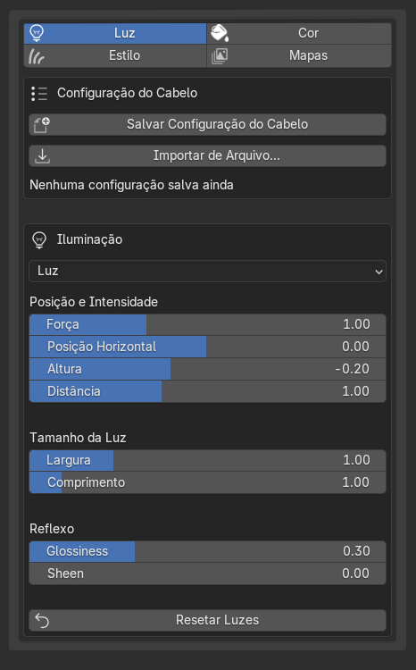
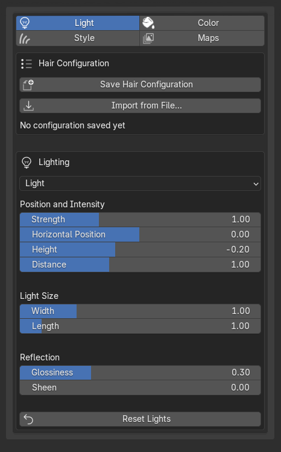
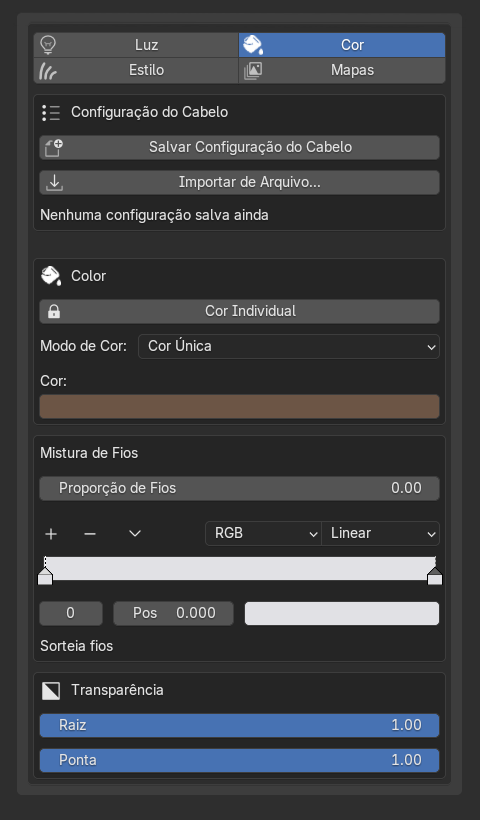
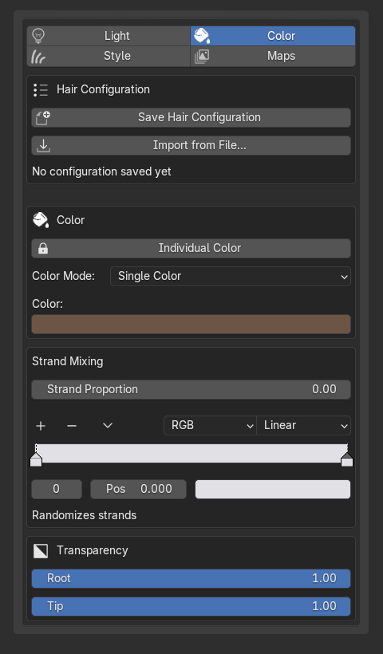
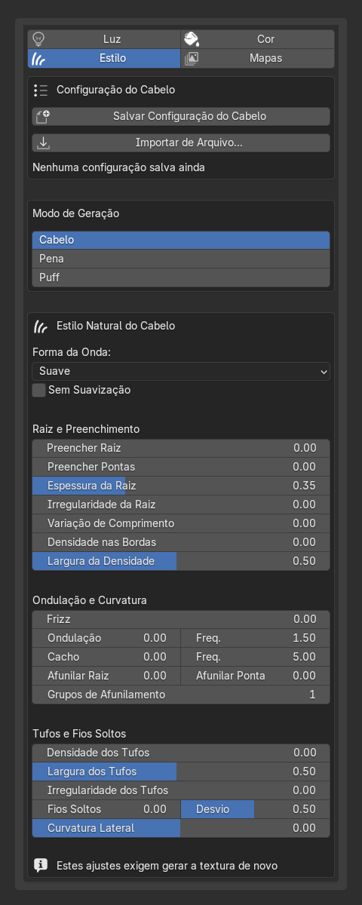
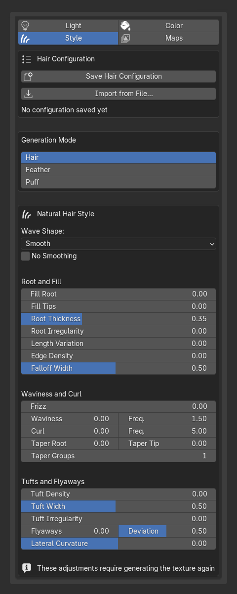
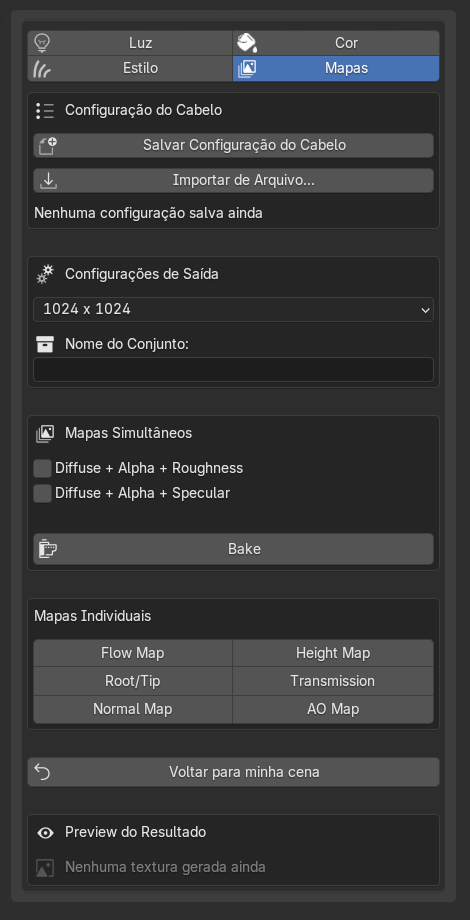
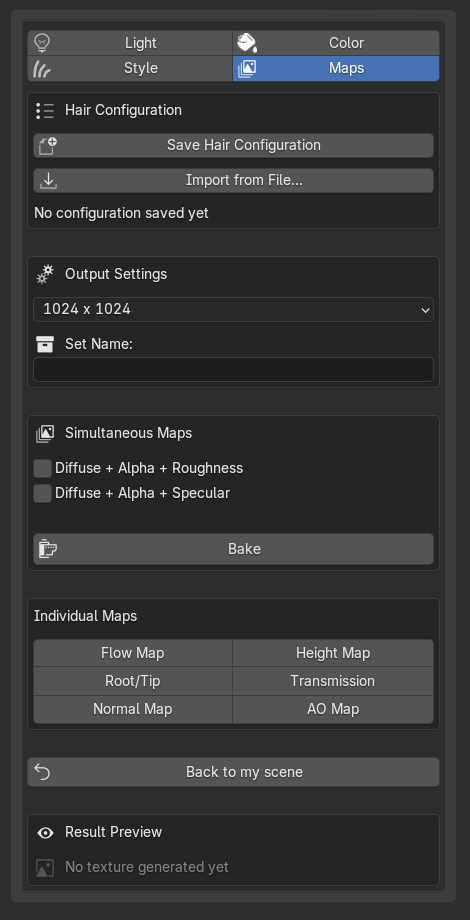
- Use "Voltar para minha cena" pra sair — não feche a aba direto.
- Use "Back to my scene" to exit — don't just close the tab directly.
- Clicar numa mecha diferente troca o slot ativo sozinho.
- Clicking a different strand switches the active slot on its own.
- Editar os fios em Edit Mode marca aquele slot como editado à mão: a partir daí, entrar/sair do Estúdio preserva sua edição em vez de reconstruir do zero. Um reset manual limpa essa marca.
- Editing the strands in Edit Mode marks that slot as manually edited: from then on, entering/exiting the Studio preserves your edit instead of rebuilding from scratch. A manual reset clears that mark.
Usando só a câmera do Estúdio, sem o cabelo/luz do addon
Using only the Studio camera, without the addon's hair/light
Às vezes você só quer a câmera já enquadrada do Estúdio pra fazer bake de outra coisa, com sua própria iluminação — sem o cabelo procedural nem as luzes do addon.
Sometimes you just want the Studio's already-framed camera to bake something else, with your own lighting — without the procedural hair or the addon's lights.
- Entre na aba Estúdio normalmente (a cena "Hair Texture Studio" abre com a câmera já posicionada).
- Open the Studio tab as usual (the "Hair Texture Studio" scene opens with the camera already positioned).
- No Outliner, desative o ícone de Render dos objetos
HairTextureStudio_Strands_*e das luzes do addon ou remova o cabelo comRemover Cabelo Deste Slot. - In the Outliner, disable the Render icon on the
HairTextureStudio_Strands_*objects and on the addon's lights, or remove the hair withRemove Hair from This Slot. - Traga seu próprio objeto (arraste de outra cena, ou use Adicionar Objeto Customizado pra aproveitar o encaixe automático no slot).
- Bring in your own object (drag it from another scene, or use Add Custom Object to take advantage of the automatic fit into the slot).
- Adicione sua própria luz, do jeito que quiser iluminar.
- Add your own light, however you want to light it.
- Faça o bake normalmente (Render Properties → Bake) — a câmera continua sendo a mesma que o addon posicionou.
- Bake as usual (Render Properties → Bake) — the camera is still the same one the addon positioned.
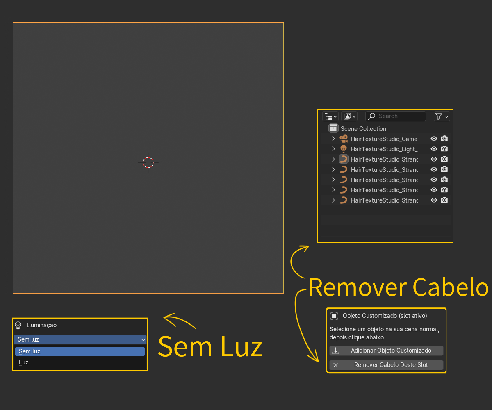
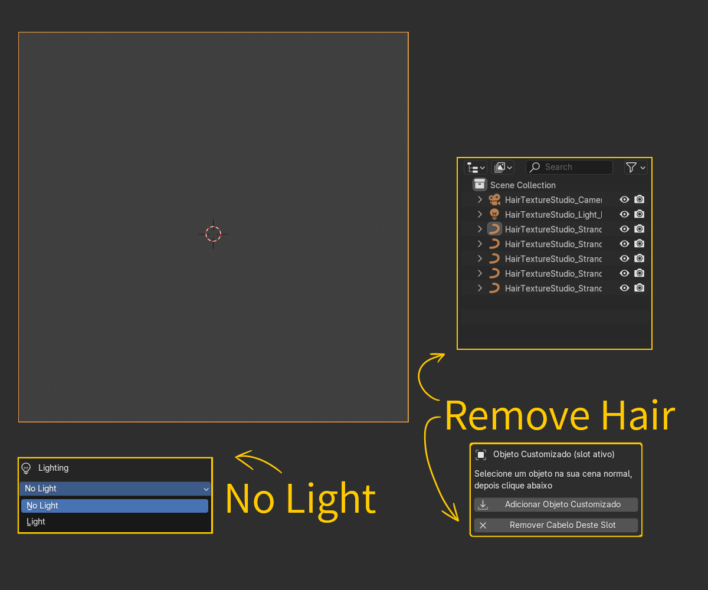
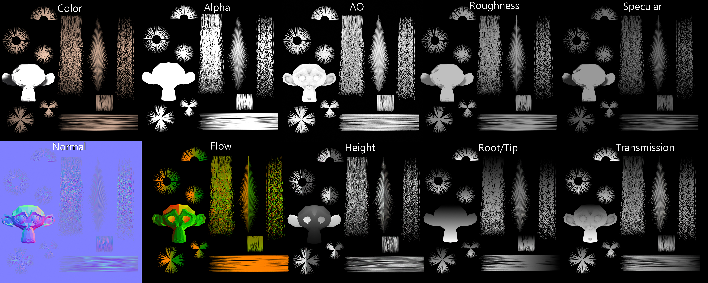
Editor de Perfil: dicas rápidas
Profile Editor: quick tips
- Espelhar X liga um espelho no eixo vertical — você edita só metade do contorno.
- Mirror X turns on a mirror on the vertical axis — you only edit half of the outline.
- Pra esticar uma ponta (adicionar um ponto além do primeiro ou do último), clique um pouco afastado do ponto existente — clicar muito perto arrasta o ponto em vez de criar um novo.
- To extend a tip (add a point past the first or the last one), click a little away from the existing point — clicking too close drags the point instead of creating a new one.
- Curva Suave troca linhas retas por uma curva suave — é só visual/de exportação, não muda os pontos de controle.
- Smooth Curve swaps straight lines for a smooth curve — it's only visual/for export, it doesn't change the control points.
Editor de UV: dicas rápidas
UV Editor: quick tips
O Editor de UV é onde você organiza várias texturas de cabelo dentro de um atlas único — arraste e redimensione as células diretamente na viewport do editor, sem precisar sair pro UV Editor nativo do Blender.
The UV Editor is where you organize several hair textures inside a single atlas — drag and resize the cells directly in the editor's viewport, without having to leave for Blender's native UV Editor.
Montar Material, na aba Mapas
Build Material, on the Maps tab
Na aba Mapas, a caixa "Montar Material" é o jeito rápido de montar o material final: em vez de conectar cada mapa de textura manualmente nos nós, você aponta pra uma pasta com as imagens (PNG ou JPG) e o addon identifica sozinho o que é cada uma pelo nome do arquivo, agrupa tudo como um "conjunto" e liga tudo automaticamente ao criar o material.
On the Maps tab, the "Build Material" box is the fast way to assemble the final material: instead of manually wiring each texture map into the nodes, you point it at a folder with the images (PNG or JPG) and the addon identifies each one on its own by the file name, groups everything into a "set", and wires it all automatically when creating the material.
O addon reconhece o papel de cada imagem por palavras no nome do arquivo (não importa maiúscula/minúscula, nem se está com _, - ou espaço):
The addon recognizes each image's role from words in the file name (case doesn't matter, nor whether it's separated by _, - or a space):
| Mapa | Pra que serve | Palavras reconhecidas no nome do arquivo |
|---|---|---|
| Map | What it's for | Words recognized in the file name |
| Color | Cor base do fio. | color, colour, albedo, diffuse, basecolor, diff, col |
| Color | Base color of the strand. | color, colour, albedo, diffuse, basecolor, diff, col |
| Normal | Detalhe de relevo por card, dá volume à silhueta plana. | normal, nrm, nmap, nor, norm |
| Normal | Per-card surface detail, gives volume to the flat silhouette. | normal, nrm, nmap, nor, norm |
| AO | Sombreamento de contato onde os fios se sobrepõem. | ao, occlusion, ambientocclusion |
| AO | Contact shading where strands overlap. | ao, occlusion, ambientocclusion |
| Alpha | Recorte da silhueta do card — fora do fio fica transparente. | alpha, opacity, transparent, mask, cutout |
| Alpha | Cuts out the card's silhouette — outside the strand becomes transparent. | alpha, opacity, transparent, mask, cutout |
| Flow | Direção do fio — usada pro brilho especular acompanhar o sentido do cabelo. | flow, flowmap, direction, dir, anisotropy |
| Flow | Strand direction — used so the specular highlight follows the hair's direction. | flow, flowmap, direction, dir, anisotropy |
| Height | Relevo/deslocamento, pra efeitos de parallax ou displacement. | height, displacement, disp, depth |
| Height | Relief/displacement, for parallax or displacement effects. | height, displacement, disp, depth |
| Root/Tip | Gradiente preto→branco da raiz à ponta, útil pra variar cor/opacidade ao longo do fio. | roottip, root_tip, gradient |
| Root/Tip | Black-to-white gradient from root to tip, useful for varying color/opacity along the strand. | roottip, root_tip, gradient |
| Transmission | Quanto de luz atravessa o fio (efeito translúcido). | transmission, translucency, sss |
| Transmission | How much light passes through the strand (translucent effect). | transmission, translucency, sss |
| Roughness | Quão fosco ou brilhante o fio aparece. | roughness, rough, rgh, gloss |
| Roughness | How matte or shiny the strand appears. | roughness, rough, rgh, gloss |
| Specular | Intensidade do brilho especular. | specular, spec, spc |
| Specular | Specular highlight intensity. | specular, spec, spc |
Se um arquivo não tiver nenhuma dessas palavras no nome, ele é simplesmente ignorado na importação (o addon avisa quando nada foi reconhecido na pasta) — vale renomear antes de importar se algum mapa seu usa um nome fora do padrão.
If a file doesn't have any of these words in its name, it's simply skipped on import (the addon warns you when nothing was recognized in the folder) — it's worth renaming before importing if one of your maps uses a non-standard name.
Otimizar: "Preparar para Jogo" (bake completo)
Optimize: "Prepare for Game" (full bake)
Além de só reduzir a curva pra uma mesh leve, a aba Otimizar tem um segundo modo, mais completo: Preparar para jogo. Ele automatiza os passos de deixar uma mecha pronta pra exportar de vez, tudo num clique:
Besides just reducing the curve to a light mesh, the Optimize tab has a second, more complete mode: Prepare for Game. It automates the steps of getting a strand fully export-ready, all in one click:
- Duplicar objeto — trabalha numa cópia, sem mexer no original.
- Duplicate Object — works on a copy, without touching the original.
- Converter cópia para Mesh — transforma a cópia em malha de verdade.
- Convert Copy to Mesh — turns the copy into a real mesh.
- Criar Material — monta um material novo pra essa cópia (ou reaproveita um existente, com "Reutilizar material existente").
- Create Material — builds a new material for that copy (or reuses an existing one, with "Reuse Existing Material").
- Assar Material — assa o resultado final na resolução escolhida.
- Bake Material — bakes the final result at the chosen resolution.
O "Material" desse formulário decide o que exatamente é assado — por exemplo, Material Final assa só a Base Color final, sem luz, enquanto outras opções incluem a iluminação da cena no resultado.
The "Material" dropdown in this form decides exactly what gets baked — for example, Final Material bakes just the final Base Color, without lighting, while other options include the scene's lighting in the result.
Limitações conhecidas
Known limitations
Coisas que o addon ainda não faz, ou faz de um jeito diferente do que você imaginaria — melhor saber antes de esbarrar sozinho. Esta lista tende a crescer.
Things the addon doesn't do yet, or does differently than you'd expect — better to know before running into them on your own. This list tends to grow.
- Ao instalar no Blender 4.2.x, pode aparecer um erro em vermelho no console — é um bug conhecido do próprio Blender (4.2.7–4.3), não do addon. O addon já foi instalado e ativado com sucesso antes disso; pode ignorar o erro.
- When installing on Blender 4.2.x, a red error may appear in the console — it's a known bug in Blender itself (4.2.7–4.3), not the addon. The addon has already been successfully installed and enabled before that; you can ignore the error.
- Trança / Corda: Se você alterar o perfil de outro elemento e usar uma ferramenta, a Trança/Corda pode temporariamente reverter para o perfil anterior ao reentrar na ferramenta. Como resolver: Basta selecionar a Trança/Corda e usar qualquer ferramenta, ou simplesmente entrar e sair do Edit Mode para que o perfil correto seja restaurado.
- Braid / Rope: If you change the profile of another element and use a tool, the Braid/Rope may temporarily revert to the previous profile when re-entering the tool. How to fix it: Simply select the Braid/Rope and use any tool, or just enter and exit Edit Mode so the correct profile is restored.
- As ferramentas do addon funcionam por conta própria, de um jeito diferente das ferramentas nativas do Blender (são pincéis modais com atalhos próprios) — não espere o mesmo comportamento de sculpt/paint padrão do Blender.
- The addon's tools work on their own, differently from Blender's native tools (they're modal brushes with their own shortcuts) — don't expect the same behavior as Blender's standard sculpt/paint.
- Gerar Textura a partir de imagem não tem preview ao vivo — você ajusta os parâmetros, gera, e só então vê o resultado.
- Generate Texture from image has no live preview — you set the parameters, generate, and only then see the result.
- O modo Editor Preciso, dentro de Fita de Cabelo (Ribbon), na aba Criar, é experimental — funciona, mas ainda está em desenvolvimento.
- The Precise Editor mode, inside Hair Ribbon, on the Create tab, is experimental — it works, but it's still under development.
- Mover o Path não atualiza a trança/mecha em tempo real — a reconstrução só dispara em momentos específicos (sair do Edit Mode do Path, trocar o Controle, usar um botão de aplicar ou usar as ferramentas que interagem com o path). Não espere ver a geometria acompanhando o movimento enquanto você arrasta.
- Moving the Path doesn't update the braid/strand in real time — the rebuild only fires at specific moments (exiting the Path's Edit Mode, switching Control, using an apply button, or using the tools that interact with the path). Don't expect to see the geometry follow the movement while you drag.
- O botão Salvar Configuração do Cabelo, no Estúdio, salva só os 5 slots principais — não é possível salvar a cor individual de cada mecha separadamente nesse mesmo botão.
- The Save Hair Configuration button, in the Studio, only saves the 5 main slots — it's not possible to save each strand's individual color separately with that same button.
- No Editor de Perfil, quando "Espelhar X" estiver ligado, adicionar pontos exatamente onde você quer pode ser mais difícil. Se sentir que isso está atrapalhando, é recomendado arrastar os pontos já existentes em vez de tentar adicionar novos.
- In the Profile Editor, when Mirror X is on, adding points exactly where you want can be harder — it's recommended to drag the points instead if you feel that this is getting in the way too much.
- No Editor de Perfil, suavizar um perfil Personalizado é um botão que você aciona (Curva Suave: ON/OFF) — diferente dos perfis padrão (Redondo, Fita, etc.), que têm uma caixinha de verdade e atualizam ao vivo.
- In the Profile Editor, smoothing a Custom profile is a button you press (Smooth Curve: ON/OFF) — unlike the default profiles (Round, Ribbon, etc.), which have a real checkbox and update live.
- Trocar o Controle de uma Trança/Corda pra Geometria e editar a malha diretamente quebra o vínculo com os sliders — a partir daí, os sliders da Trança não vão mais controlar essa geometria.
- Switching a Braid/Rope's Control to Geometry and editing the mesh directly breaks the link with the sliders — from then on, the Braid's sliders will no longer control that geometry.
- A torção (rotação/tilt) pode acumular sem querer em edições sucessivas — use com cautela, principalmente em fluxos com muita repetição.
- Twist (rotation/tilt) can accumulate unintentionally over successive edits — use with caution, especially in workflows with a lot of repetition.
- A resolução máxima pra gerar arquivos de textura é 4K.
- The maximum resolution for generating texture files is 4K.
- O Bake do Estúdio sempre renderiza em Cycles, independente do motor configurado na cena — para cabelo (muita transparência sobreposta), o Cycles é mais rápido e não trava a interface durante o processo, ao contrário do EEVEE.
- Studio Bake always renders in Cycles, regardless of the scene's configured engine — for hair (lots of overlapping transparency), Cycles is faster and doesn't freeze the interface during the process, unlike EEVEE.
- Vincular ao Path Composto só funciona com curvas — não é possível vincular objetos de malha (mesh) diretamente.
- Link to Composite Path only works with curves — it's not possible to link mesh objects directly.
Perguntas frequentes
Frequently asked questions
- Meu slider não está funcionando.
- My slider isn't working.
- Confira a caixinha Auto-Atualizar — se estiver desmarcada, o valor é guardado mas só aplica quando algo força uma atualização.
- Check the Auto-Update checkbox — if it's unchecked, the value is stored but only applies when something forces an update.
- Mexi na trança e ela voltou pro formato anterior.
- I edited the braid and it went back to its previous shape.
- Você provavelmente está no Controle Path — edite o Path, não a malha da trança diretamente.
- You're probably on Path Control — edit the Path, not the braid's mesh directly.
- Apaguei o Path e perdi a Trança/Corda.
- I deleted the Path and lost the Braid/Rope.
- É o comportamento esperado — Path e Trança/Corda são uma coisa só. Se quiser manter a forma sem o vínculo, troque o Controle pra Geometria antes de excluir.
- That's the expected behavior — the Path and the Braid/Rope are a single thing. If you want to keep the shape without the link, switch Control to Geometry before deleting.
- Como excluir o Path sem perder a Trança/Corda?
- How do I delete the Path without losing the Braid/Rope?
- Exclua o path dentro de edit mode.
- Delete the path from inside Edit Mode.
- Meu mapa não apareceu no Montar Material.
- My map didn't show up in Build Material.
- Confira se o nome do arquivo tem uma das palavras reconhecidas (veja a tabela em Montar Material) — sem isso, o arquivo é ignorado na importação.
- Check whether the file name has one of the recognized words (see the table in Build Material) — without that, the file is ignored on import.
- Posso editar a Trança/Corda manualmente?
- Can I edit the Braid/Rope manually?
- Sim — troque o Controle pra Geometria. Isso desliga o vínculo com o Path (e com os sliders), deixando a malha livre pra edição direta.
- Yes — switch Control to Geometry. This turns off the link with the Path (and with the sliders), leaving the mesh free for direct editing.
Atalhos de teclado
Keyboard shortcuts
Dentro de qualquer pincel
Inside any brush
Funcionam enquanto o pincel está ativo — aperte uma vez pra ligar o modo, mova o mouse e clique (ou aperte de novo) pra confirmar.
These work while the brush is active — press once to turn the mode on, move the mouse and click (or press again) to confirm.
| Tecla | O que faz |
|---|---|
| Key | What it does |
| F | Liga/desliga o ajuste do raio do pincel. |
| F | Toggles the brush's radius adjustment. |
| S | Liga/desliga o ajuste da força/intensidade. Não existe em pincéis sem essa noção, como Excluir Cabelo e Tesoura. |
| S | Toggles the strength/intensity adjustment. Not present on brushes without that notion, like Delete Hair and Scissors. |
| Ctrl+Z | Desfaz a última pincelada — funciona mesmo antes de soltar a ferramenta. |
| Ctrl+Z | Undoes the last stroke — works even before releasing the tool. |
| Enter / Esc / clique direito | Confirma e sai do pincel. |
| Enter / Esc / right-click | Confirms and exits the brush. |
Só no pincel Criar (Clique)
Only on the Create (Click) brush
| Tecla | O que faz |
|---|---|
| Key | What it does |
| R | Liga/desliga o ajuste de rotação da mecha sendo criada. |
| R | Toggles the rotation adjustment of the strand being created. |
Editor de Perfil
Profile Editor
| Atalho | O que faz |
|---|---|
| Shortcut | What it does |
| Clique numa linha | Adiciona/insere um ponto ali. |
| Click on a line | Adds/inserts a point there. |
| Arrastar um ponto | Move o ponto. |
| Drag a point | Moves the point. |
| Ctrl+clique ou X | Remove o ponto. |
| Ctrl+click or X | Removes the point. |
| C | Abre ou fecha o contorno (cíclico). |
| C | Opens or closes the outline (cyclic). |
| Ctrl+clique em espaço vazio | Adiciona uma nova linha/spline. |
| Ctrl+click on empty space | Adds a new line/spline. |
| Tab | Troca qual linha está ativa. |
| Tab | Switches which line is active. |
| Ctrl+Z | Desfaz a última alteração no editor. |
| Ctrl+Z | Undoes the last change in the editor. |
| Enter | Confirma para salvar. |
| Enter | Confirms to save. |
| Esc / clique direito | Sai do editor. |
| Esc / right-click | Exits the editor. |
Editor Preciso (Fita de Cabelo / Ribbon)
Precise Editor (Hair Ribbon)
Botão Iniciar desenha linhas novas; botão Editar reabre as linhas já desenhadas pra ajustar (use-o de novo depois de mudar algum parâmetro, como Mechas na Fita, pra ver a mudança refletida).
Start draws new lines; Edit reopens the lines already drawn to adjust them (use it again after changing a parameter, like Strands in Ribbon, to see the change reflected).
| Atalho | O que faz |
|---|---|
| Shortcut | What it does |
| Clique | Adiciona um ponto da Raiz (por padrão 4 pontos, a linha avança sozinha depois disso). |
| Click | Adds a Root point (4 by default, the line advances on its own after that). |
| Enter antes do 4º clique | Confirma a linha com só 2 ou 3 pontos. |
| Enter before the 4th click | Confirms the line with only 2 or 3 points. |
| A | Adiciona um ponto. |
| A | Adds a point. |
| C | Corta a fita. |
| C | Cuts the ribbon. |
| X / Del | Remove um ponto. |
| X / Del | Removes a point. |
| Ctrl+Z | Desfaz. |
| Ctrl+Z | Undoes. |
| Enter / Esc / clique direito | Confirma e sai do editor. |
| Enter / Esc / right-click | Confirms and exits the editor. |
Editor de UV
UV Editor
| Atalho | O que faz |
|---|---|
| Shortcut | What it does |
| clique direito | Cancela e fecha o editor. |
| right-click | Cancels and closes the editor. |
Duplicar e juntar (Trança/Corda e Path Composto)
Duplicate and join (Braid/Rope and Composite Path)
Substituem os atalhos nativos do Blender só quando faz sentido — em qualquer outro objeto, o atalho continua sendo o padrão.
These replace Blender's native shortcuts only when it makes sense — on any other object, the shortcut stays the default one.
| Tecla | Objeto ativo | O que faz |
|---|---|---|
| Key | Active object | What it does |
| Shift+D / Ctrl+D | Path de Trança/Corda | Duplica a Trança/Corda inteira (Path + mechas). |
| Shift+D / Ctrl+D | Braid/Rope Path | Duplicates the entire Braid/Rope (Path + strands). |
| Shift+D / Ctrl+D | Path Composto (Grupo) | Duplica o Grupo inteiro (Path + mechas vinculadas). |
| Shift+D / Ctrl+D | Composite Path (Group) | Duplicates the entire Group (Path + linked strands). |
| Ctrl+J | 2+ Paths de Trança/Corda selecionados | Junta as tranças num grupo só. |
| Ctrl+J | 2+ Braid/Rope Paths selected | Joins the braids into a single group. |
| Ctrl+J | 2+ Paths Compostos (Grupo) | Junta os Paths num grupo só, cada um mantendo sua própria linha. |
| Ctrl+J | 2+ Composite Path | Joins the paths into a single group. |
Curtiu o que viu? O Simple Hair Cards está disponível no Gumroad. Confira a página do produto →
Liked what you saw? Simple Hair Cards is available on Gumroad. Check out the product page →